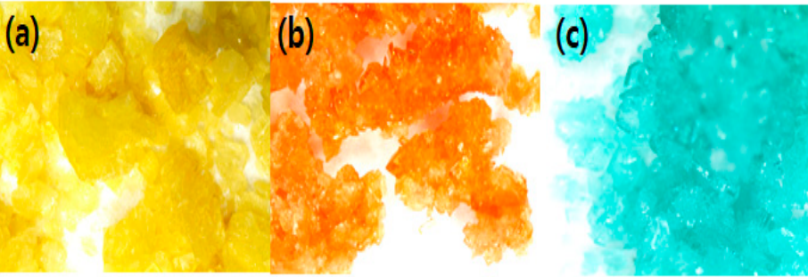
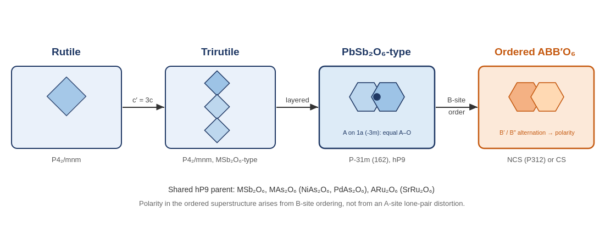
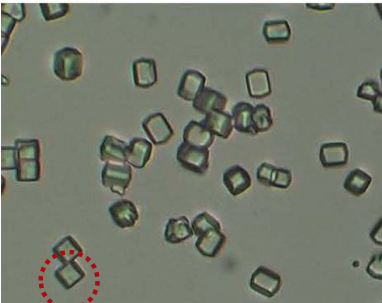
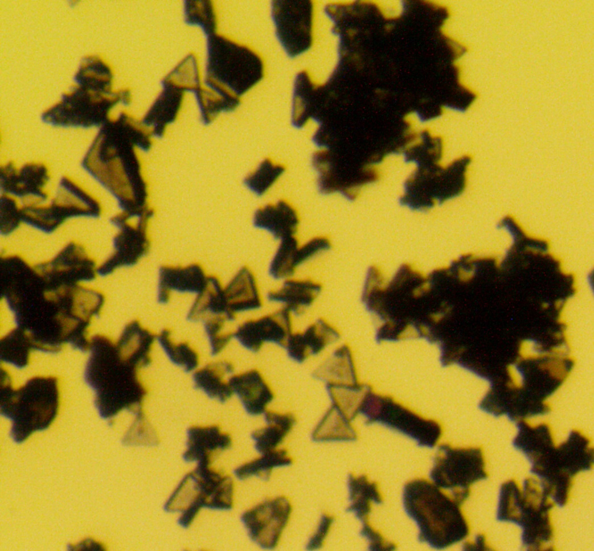
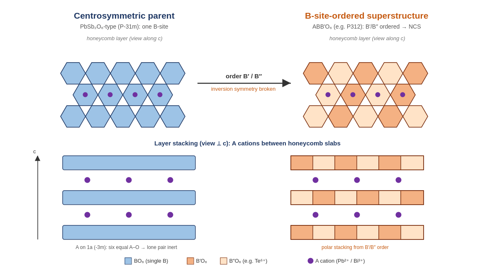

Department of Chemistry Education, Chosun University
Sun Woo Kim, principal investigator · Visiting Scholar, Department of Chemistry, University of Houston, 2026–27
We start from structures that minerals have already proved to be stable, put new combinations of metals into those frameworks, and get mixed-metal oxides and halides that do not occur in nature. We grow the crystals, solve the structures, and work out why a particular arrangement of atoms produces a particular magnetic or optical response.

Designing a new solid from a blank page usually fails. We start instead from frameworks that minerals have already proved stable — perovskite (CaTiO₃), pyrochlore (A₂B₂O₇), jarlite (NaSr₃Al₃F₁₆), aeschynite (CaTa₂O₆-type) and rosiaite (PbSb₂O₆) — and change what sits on the metal sites, or order what is already there. The composition becomes something nature never made; the framework stays sound.
This is the through-line of everything below. Jarlite-related Ba₁₄Li₁.₈₇Mn₁₄.₁₃F₆₈, pyrochlore-related RbFe²⁺Fe³⁺F₆, the cation-deficient layered perovskite K₄Fe₃F₁₂, aeschynite-type YCrWO₆ and LuCrWO₆, and the PbSb₂O₆-type honeycomb tellurates all come out of it. The four threads that follow are the same idea pushed through different families of material.

Fluoride is a small, highly electronegative, monovalent anion. It stabilises high oxidation states, builds open low-dimensional frameworks, and prefers terminal over bridging coordination, which yields the acentric, polar building units that oxides rarely form on their own. It is a demanding chemistry, and correspondingly underexplored.
Fluoride synthesis has long depended on HF or F₂ gas, which sharply limits the compositions anyone can reach. We use mild hydrothermal routes with dilute CF₃COOH or HBF₄ instead — the same families remain accessible without concentrated hydrofluoric acid, and within a safety envelope a trained undergraduate can work in. The route gives phase-pure multiferroic BaMF₄ and has produced new charge-ordered magnetic fluorides such as RbFe²⁺Fe³⁺F₆ and K₄Fe₃F₁₂.
Current work looks for mixed-metal halides with nonlinear optical response (NRF, 2022–) and is writing up Zr₃(OH)₂F₁₀, a zirconium hydroxyfluoride from phase-selective hydrothermal synthesis whose structure gives it moderate birefringence. The M²⁺AlF₅(H₂O)₇ series (M = Fe, Co, Ni) switches between a monoclinic C2/m form at room temperature and a triclinic P-1 form at 100 K; extending it to other metal combinations should show how cation size and d-electron count decide which polymorph wins.


Hydrothermal synthesis · single-crystal XRD · magnetometry · neutron powder diffraction · second-harmonic generation
Ferroelectricity and (anti)ferromagnetism in the same phase would let a magnetic field switch an electric polarisation, or the reverse — the basis for low-power non-volatile memory and magnetoelectric sensing. The difficulty is that ferroelectricity demands a non-centrosymmetric space group while magnetic order demands unpaired d or f spins with a workable exchange pathway. Few families manage both; BiFeO₃ and LuFe₂O₄ are most of the established list.
The approach is to start from a centrosymmetric parent containing a stereochemically active lone pair or a size-mismatched cation, then break inversion symmetry by chemical substitution or cation ordering while keeping or introducing a magnetic sublattice. Rosiaite (PbSb₂O₆) gave the noncentrosymmetric honeycomb tellurates A(II)GeTeO₆, PbMnTeO₆ and BiM(III)TeO₆; high-pressure, high-temperature synthesis in the aeschynite (CaTa₂O₆-type) framework gave the polar magnets YCrWO₆ and LuCrWO₆. Next are first-row transition metals — Mn³⁺, Fe³⁺, Cr³⁺ — in tellurate and antimonate frameworks that have not yet hosted them.
Synthesis runs alongside computation. First-principles (DFT) calculations carried the electronic and optical analysis for Bi₆Te₂O₁₅ and K₀.₈₂Tl₁.₁₈MoP₂O₉, and the polyoxometalate manuscript in preparation pairs single-crystal structure determination with electronic-structure calculation and SHG measurement. As the group's own data accumulate, the plan is to use machine-learning models to screen candidate compositions and synthesis conditions before going to the bench.

Solid-state and high-pressure synthesis · synchrotron powder diffraction · Rietveld refinement · second-harmonic generation · piezoresponse force microscopy · DFT
Sol–gel parameters — pH, calcination temperature, acid catalyst, dopants — set the anatase purity and particle size that determine photocatalytic performance. Optimised titania outperformed commercial P25 in NOx degradation, and the same compositions carry over into cementitious materials that clean air and take up CO₂.
The limitation across this whole field is plain: TiO₂ and most other established photocatalysts work properly only under ultraviolet light, which is a few percent of the solar spectrum. So the work now is to push the absorption edge into the visible while keeping the catalytic activity — transition-metal and non-metal doping, and solid solutions with narrower-gap semiconductors, compared across host lattices: titanates, tungstates, transition-metal oxynitrides and sulfides.
Performance is measured two ways: degradation of a model volatile organic compound — acetaldehyde or toluene — followed by gas chromatography, and hydrogen evolution from aqueous solution under simulated sunlight. The first is a semester-sized project, so students usually start there. The goal is a quantitative relationship between dopant composition, band gap and activity.
Sol–gel synthesis · ball milling · BET · diffuse-reflectance UV–Vis with Tauc analysis · XPS · gas chromatography · accelerated carbonation testing
This is the group's newest direction. Rare earths are indispensable to electronics, permanent magnets and phosphors, yet supply is geographically concentrated and prices swing hard — which is why recovery from spent fluorescent-lamp phosphor powder and end-of-life NdFeB magnets is growing so quickly.
We treat the waste as a synthetic feedstock rather than a recycling target. The acid-leached rare-earth solution goes straight into hydrothermal or solvothermal synthesis with carboxylate and phosphonate linkers — no purification to single-element oxides first — to build new rare-earth coordination polymers and metal–organic frameworks. Recovery usually gives a mixed-lanthanide solution, and the interesting question is whether that mixture yields luminescent or magnetic behaviour a single-lanthanide analogue cannot.
Eu³⁺, Tb³⁺ and Dy³⁺ luminesce in their own right, so the products are screened as phosphors by photoluminescence excitation and emission spectroscopy for colour purity and quantum yield — the motivation for recovering phosphor-grade rare earths returning as the application. The first milestone, sized for an undergraduate to finish, is reliable recovery of usable rare-earth oxide from the waste itself.
Acid leaching · selective precipitation · hydrothermal and solvothermal synthesis · powder XRD · FT-IR · SEM/EDX · thermogravimetric analysis · photoluminescence spectroscopy
Zr₃(OH)₂F₁₀ — phase-selective hydrothermal synthesis, crystal structure and moderate birefringence of a zirconium hydroxyfluoride.
Tl₃Mo₁₂PO₄₀ and Tl₄Mo₅P₂O₂₂ — centrosymmetric and noncentrosymmetric polyoxometalate clusters: structure, electronic structure calculation and second-harmonic generation.
I started on TiO₂ photocatalysis as a master's student at Kyungpook National University, then went to the University of Houston for a Ph.D. with P. Shiv Halasyamani on the hydrothermal synthesis of new mixed-metal fluorides — the CF₃COOH route this group still uses came out of that work. Three years at Rutgers with Martha Greenblatt added polar and magnetic oxides; a year at Pusan National University with Ok-Sang Jung added platinum coordination chemistry.
Since 2018 I have run an independent group at Chosun University as sole PI on two National Research Foundation of Korea grants. From August 2026 to July 2027 I am on sabbatical as a visiting scholar in the Department of Chemistry at the University of Houston.
| Position | Institution | Years |
|---|---|---|
| Visiting Scholar, sabbatical | University of Houston | 2026–27 |
| Associate Professor | Chosun University | 2018– |
| Postdoctoral Associate | Pusan National University | 2017–18 |
| Postdoctoral Associate | Rutgers University | 2014–17 |
| Commissioned Research Scientist | RIST | 2009 |
Members
Within a semester you will grow your own crystals, collect diffraction data on them and solve the structure yourself. All four directions are cut into pieces sized so that a student who has learned one synthesis method and one or two characterisation tools can finish a complete, publishable part of a larger project in a semester or two — one synthesis, one diffraction pattern to index, one spectrum to interpret.
For a graduate student those pieces join up into a thesis: taking a new family of materials the whole way, from working out the synthesis conditions to solving the structures, measuring the properties and writing the paper.
Students from the group appear as authors on several of the papers listed above. You do not have to be a chemistry-education major — email me.
What you learn here:
Thirty-three selected papers. The coloured marker gives the material family.
Patent — Kim, T.-J.; Kim, W.-J.; Kim, S. W. Production method of titanium dioxide (TiO₂) photocatalyst and TiO₂ photocatalyst produced by the same. US 2009/0286676 A1.
Since 2018 I have taught most of the core curriculum in the department: General Chemistry I and II with their laboratories, Inorganic Chemistry I and II with laboratory, Analytical Chemistry with laboratory, Coordination Chemistry, and graduate special-topics courses in inorganic and solid-state chemistry. That is the full lecture-and-laboratory sequence a department depends on, not a single specialty course.
The inorganic sequence runs from atomic structure and periodic trends through acid–base and redox chemistry, coordination chemistry and crystal-field theory, molecular orbital theory and organometallics, to solid-state chemistry and its applications — batteries, fuel cells, phosphors, heterogeneous catalysis, nanomaterials. Discussion- and problem-based teaching throughout, to tie the principles to current materials research.
| Course | Level | Years |
|---|---|---|
| General Chemistry I / Laboratory I | Undergrad | 2018–2025 |
| General Chemistry II / Laboratory II | Undergrad | 2018–2025 |
| General Chemistry, non-majors / Laboratory | Undergrad | 2018–2019 |
| Inorganic Chemistry I | Undergrad | 2018–2026 |
| Inorganic Chemistry II | Undergrad | 2018–2025 |
| Inorganic Chemistry Laboratory | Undergrad | 2018–2025 |
| Analytical Chemistry / Laboratory | Undergrad | 2018–2024 |
| Coordination Chemistry | Undergrad / Grad | 2020 |
| Mathematics for Science | Undergrad | 2021–2024 |
| Environmental Science Education | Undergrad | 2019 |
| Chemistry Education Practicum | Undergrad | 2024–2026 |
| Advanced Inorganic Chemistry | Graduate | 2018–2026 |
| Special Topics in Inorganic Chemistry | Graduate | 2019–2025 |
| Special Topics in Solid-State Chemistry | Graduate | 2020, 2025 |
| Special Topics in Coordination Chemistry | Graduate | 2022, 2024 |